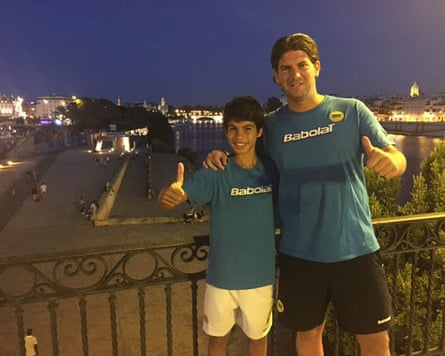
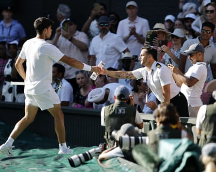
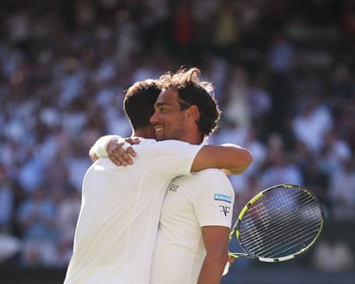
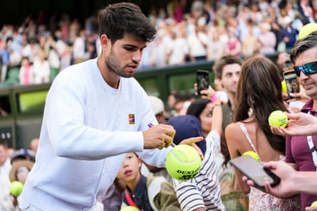
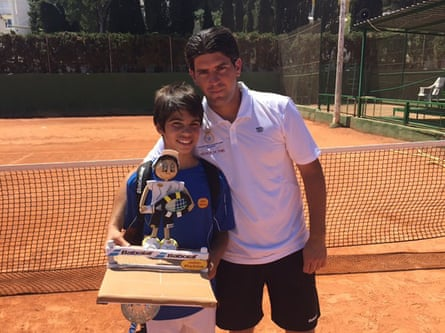

Is Carlos Alcaraz the kindest man in tennis? His childhood coaches, fans and the 79-year-old widow who collapsed during one of his matches certainly think so.
The 22-year-old Spaniard, who is riding a 24-match win streak, has spent the last fortnight charming spectators and players alike – and not just with his tennis skills.
The five-time grand slam champion has won hearts as well as matches at Wimbledon, where he reached the finals for the third consecutive year, after defeating the US player Taylor Fritz in four sets on Friday.
Kiko Navarro, Alcaraz’s former coach in his home town of El Palmar, a village in Murcia, is not surprised by the star’s good manners or popularity. “His happiness in his face, which he spreads to the spectators, it was the same when he was a child,” he says.
A young Carlos Alcaraz with his then coach, Kiko Navarro, in his home town of El Palmar, Murcia, Spain.Photograph: Kiko Navarro
“He has always been a humble person. Since he was little, when we would go to play, people would look at us and see that he was the best. And I liked to think that, well, if one day he becomes a tennis player, he would keep that humility, that closeness he has with people – and that is why he has won over all the public.”
Alcaraz’s acts of kindness at Wimbledon have been plentiful and well documented, often neatly translating into bite-size clips that go viral on social media. They include handing over his signed shirt to his Italian opponent Fabio Fognini’s son, Federico, who is a huge fan, and making time to say hello to the four-year-old son of the retired Spanish player Feliciano López, who was at SW19 for the invitation doubles.
Alcaraz also appeared to be the first person to spot 79-year-old Delyth Lewis struggling in the heat in the fifth hour of his five-set epic against Fognini. Alcaraz rushed to the umpire to halt the game before picking up his own water bottles and going to her aid when she fainted. This week the retired bank worker said she was “truly grateful” for his actions: “I’m his number one fan and I hope he lifts the trophy on Sunday.”
Alcaraz hands over a water bottle after Delyth Lewis fainted during his first-round match at Wimbledon.Photograph: Tolga Akmen/EPA
Alcaraz will face either Novak Djokovic or the world No 1, Jannik Sinner, on Sunday before next month’s US Open, where he will also play mixed doubles with the British No 1, Emma Raducanu, who he has affectionately said is “going to be the boss” .
Navarro said Alcaraz’s good deeds were not for the cameras or sponsorship deals, of which he has many. “It shows that he is a very sensitive person,” he said. “He loves those kind of gestures.
“These are things that come from the heart, which are not things that he does to win over people or brands. He has all his contracts, everything is perfect, but the truth is that he knows how to help people. He has his foundation here in Murcia, Fundación Alcaraz, to help the poorest children, and he loves it, he loves to help people.”
The consensus was the same among tennis insiders who this week said that what you saw was what you got with Alcaraz, which cannot be said for all players.
Alcaraz hugs Fabio Fognini at the end of their first-round match at Wimbledon.Photograph: Henry Nicholls/AFP/Getty Images
Alcaraz often speaks generously of his opponents after defeating them on the courts. On Tuesday he described the former British No 1 Cameron Norrie as “an amazing guy”, adding: “No one works harder than him and it is nice to see him fighting for great things .”
He also only had warm words to say about the qualifier Oliver Tarvet, who he beat in straight sets , predicting that the British 21-year-old could go on to achieve great things. He later commented on an Instagram post of Tarvet’s, saying: “Great run man, keep going.”
Carlos Santos, who coached Alcaraz from the ages of five to 12, said he had always been polite. “He was always a nice boy. He was magic. He was always smiling. He was a special boy. When Carlos was only 10 years old we travelled around Europe together, and he never caused any problems in the hotel or in matches. He’s different,” he recalled.
Alcaraz signs autographs after defeating Cameron Norrie in the quarter-final.Photograph: Shi Tang/Getty Images
His experience echoed that of Navarro, who said he had never seen Alcaraz deny a fan a photograph or autograph. And that was no different at Wimbledon on Friday morning. “I feel really good,” said a beaming 13-year-old Zoe McCallum, clutching a signed tennis ball Alcaraz had just given her. “He’s just very good at tennis,” she said in answer to why she was a huge fan.
The schoolgirl and her father, Gavin McCallum, were among hundreds of spectators who had lined up to watch Alcaraz practise on court 16 at 11am before the Spaniard’s semi-final clash against Fritz.
As well as handing out balls to his youngest admirers at the end of his session, Alcaraz patiently waved and smiled at the hordes who took photos of him and shouted: “Vamos Carlos! We hope you win!”
McCallum, 50, who had travelled from Glasgow, said: “He’s the new generation. Everybody loved Rafa [Rafael Nadal] but he’s going to be the new Spanish king of tennis. He’s got really good charisma. He’s in the middle of getting ready for the semi-final and he gave my daughter a signed tennis ball. He’s a man of the people. He seems really down to earth; he’s not too up himself and he’s taking time to do stuff with fans which is great. He didn’t have to do it but he’s done it.”
Young Alcaraz with his childhood coach, Kiko Navarro.Photograph: Kiko Navarro
“He’s just incredibly entertaining,” said 17-year-old Sophie Moore, who was also waiting to catch a glimpse of the man of the moment. “And very good looking,” interrupted her friend Lola Moffatt, 16. “Good looking, young and good at tennis,” she added.
The students, who hope to have successful tennis careers themselves, said he was the most popular player among their peers. “He’s very personable and humble, compared with other players who are quite immodest,” said Moore.
It is why Navarro thinks Alcaraz could be one of the kindest players in the sport. “Because in tennis, unfortunately, there are many – I am not going to say names – but they are not very kind to people. It seems that, in the end, in tennis, the public face is also important for brands and sponsors. That’s why Carlos, as well as from his tennis, his way of being gets him such good contracts, with all the best brands in the world.
“But for me what’s important is how Carlitos is, and if Carlitos is kind, that’s enough for me.”